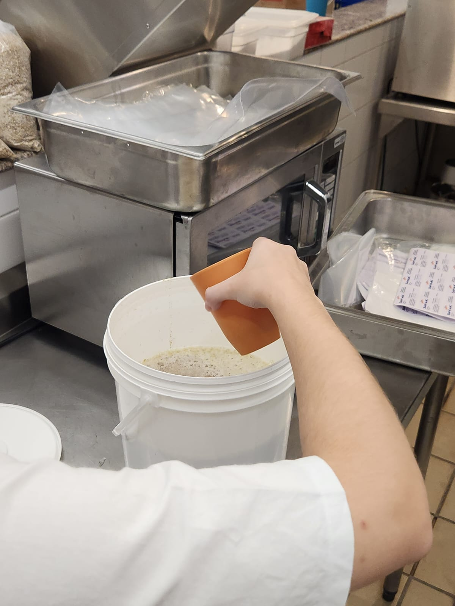

Sobre o Projeto
Este espaço é dedicado à documentação do processo de fabricação de cerveja artesanal na faculdade, unindo conceitos teóricos, controle de variáveis (como temperatura e pH) e a prática de chão de fábrica simulada.
Fundamentação & Artigo Científico
Desenvolvemos um relatório técnico detalhado abordando a análise de dados, setup dos sensores e os resultados obtidos durante as etapas de brassagem e fermentação.
📄 Acessar Artigo Científico (PDF)Galeria de Produção
Acompanhe abaixo as principais etapas do desenvolvimento prático do lote:

1. Mostura e Controle Térmico

2. Monitoramento da Fermentação

3. Análise do Produto Final